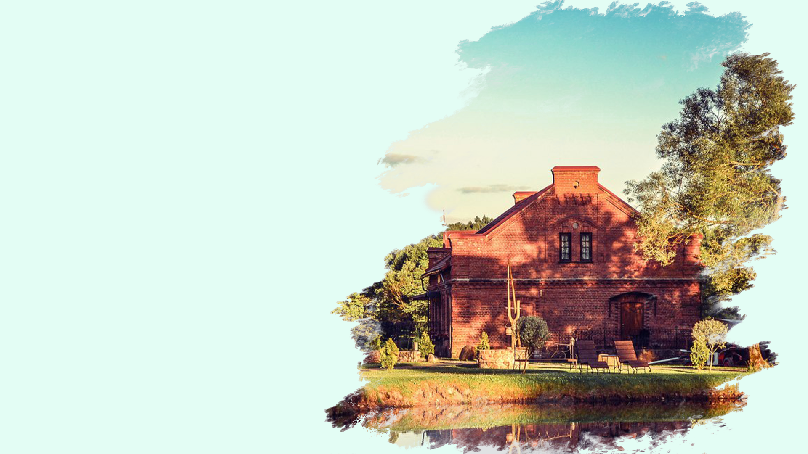

АГРОУСАДЬБА "GREEN HOUSE"
О нас
Экологически безопасный отдых, стремление к единению с природой, поиск неприхотливых радостей – вот устремления современного горожанина. Поэтому агроусадьбы Республики Беларусь становятся все более популярными как среди самих белорусов, так и гостей из соседних стран.
Агроусадьба «Green House», расположенная на юго-западнне от Минска, на берегу живописной реки Неман, – удачный выбор для тех, кто, стремясь к природе, не может отказаться от привычных городских удобств.
«Green House» впервые распахнула свои двери в 2006 году, и за прошедшие годы приняла около 15 000 гостей, в том числе из-за рубежа. Она получила грамоту Министерства спорта и туризма Республики Беларусь, благодарственное письмо от председателя Олимпийского комитета Российской Федерации.
В тренде – деревенский стиль
Для комфортного отдыха в усадьбе мы предлагаем двухэтажный особняк на 7 благоустроенных номеров и 4 отдельных коттеджа со всеми удобствами. Интерьер усадьбы выполнен в стиле «кантри», конечно, со своими национальными белорусскими особенностями, ведь в каждой стране свои деревни и обычаи.
Здесь нет кричащих красок и контрастов, много дерева, ковки, натурального текстиля. Среди предметов мебели не только диваны, столы и стулья, но и лавки, сундуки, комоды. Светильники сочетают керамику и ковку. Полы, выполненные из тщательно обработанной доски, покрыты домашними ковриками и половиками. Органично вписываются в бревенчатые стены домов охотничьи трофеи, настенные кашпо, гобелены. Среди предметов декора – исключительно ручная работа, поэтому гости могут познакомиться с оригинальными работами белорусский гончаров, кузнецов и ткачих.
И, конечно – камины. Без них деревенский отдых потерял бы часть своей романтичности.
Удобства и технический прогресс
Современному человеку трудно, а иногда и невозможно отказаться от привычки к комфорту. Самыми «современными» в агроусадьбе «Green House» являются ванные комнаты, оборудованные всеми необходимыми сантехническими объектами – унитазами, умывальными раковинами и душевыми кабинами.
Водоснабжение и отопление в усадьбе – автономное, поэтому нет перебоев с горячей водой и отоплением. Отопление включается даже летом, если погода не балует нас теплом.
Во всех номерах наличествуют ЖК-телевизоры с подключением к спутниковому ТВ, DVD-проигрыватели, интернет.
Территория и объекты
Отдыхать в агроусадьбе «Green House» могут до 50 гостей одновременно. А это значит, что большие предприятия и трудовые коллективы могут снимать усадьбу для своих сотрудников целиком.
Территория представляет собой благоустроенный земельный участок площадью, огороженный каменно-деревянным забором. На территории находятся: общая беседка, спортивная площадка для игры в волейбол или баскетбол, большой каменный мангал-печь, объекты малой декоративной архитектуры, детская площадка. Кроме того, каждый коттедж усадьбы имеет собственную огороженную территорию с лужайкой для барбекю и местом для стоянки авто.
На берегу реки (в 70-ти метрах от усадьбы) оборудован пляж с беседкой и понтоном, вышкой для ныряния и лодочным гаражом.
Особой гордостью персонала «Green House» является русская баня с купелью.